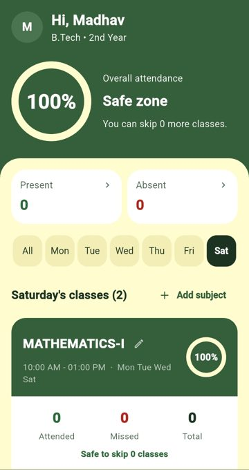
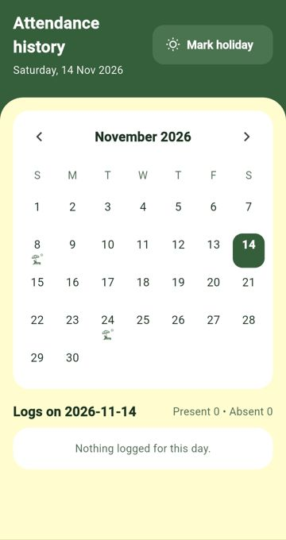
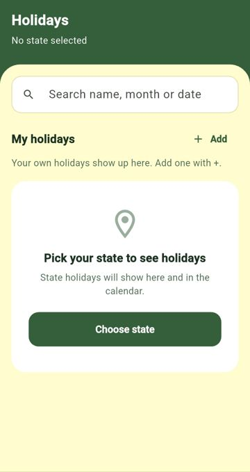
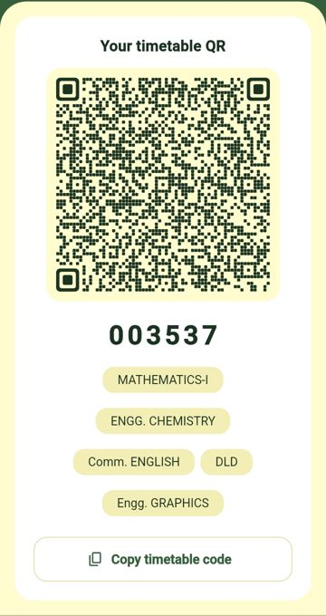
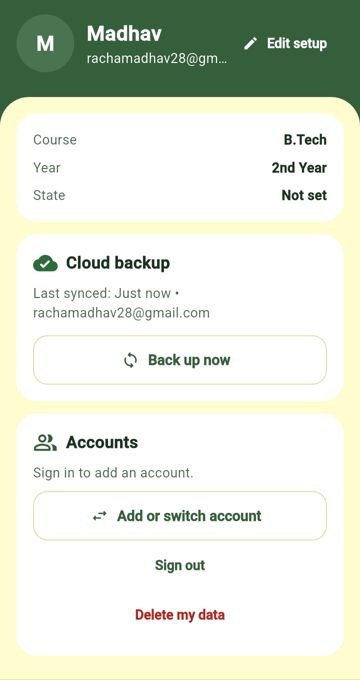

Track every class, see exactly how many you can skip, and keep your timetable in one place. Free for college students.
Open the appHow it works
Simple tools that do one job well.
Shows how many classes you can skip and still stay at 75%.
One tap per subject, per day. Multi-hour classes count as the right number of classes.
Paste your timetable from ChatGPT and subjects fill in by themselves.
Scan a classmate's QR to copy their subjects and days.
Holiday calendar and your own holidays, kept out of your attendance.
Sign in with Google to keep your data safe and switch accounts.
Home, History, Holidays, QR and Profile. Swipe to look.




Attendance percentage is classes attended divided by total classes. Most colleges need at least 75%. Attend Track counts every hour of a class, then works out how many more you can miss: attended ÷ 0.75 − total, rounded down. When it says "Safe to skip 2 classes", missing two keeps you at or above 75%.
Try it now